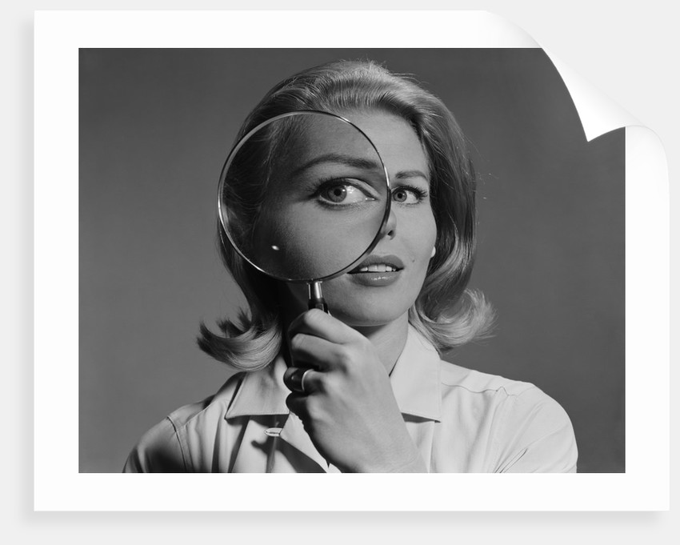

The Demon and The Diagram, Matthew Richie (2018)
I believe that a fluid relationship exists between the things
we interact with every day and our psyche:
the places we go, the people we meet, the emotions we face create
tangible stems of growth and curiosity in our brains.

Getty Images (2017)
As we grow and are impacted by a constant eb and flow of feelings,
we change our outlooks and the way we present ourselves.
Similarly, diagrammatic art is cultivated to explain circumstances
and spaces of change.
In diagramming, we have the potential to map both
living and lived experiences. With intersections between what
we've seen and what we're seeing, we're able to create
beautiful connections bridging stories and discoveries from far and wide.
C.S. Peirce's description of diagrams as "moving pictures of thought"
allows us to think of the medium as a map of multidimensional perspectives
from a single thing: be it a single lemon, the internet, or life itself.
A single thing can become millions of parts when broken down,
and each element can retain meaning.

Ambiguous Zones of a Lemon, (1963-88)
As the title suggests of the ink drawing above, ambiguity is nearlyunavoidable in a diagram. We constantly have to decipher and create
our own understandings of something that was constructed by
a separate being; so will we ever reach a "correct" interpretation?

Blonde woman magnifying glass held up to and enlarging one eye, (Corbis, (2019)
I guess that becomes the beauty in it.
With no concrete representation, diagrammatic art is
a mapping strategy to add new perspectives and engage curiosity.
To settle in a true relationship between art and art's meaning,
we must grip the fact that the appearance and understanding of something will
be rooted in the thought processes that are used to analyze it.
What is the relationship between diagrams and meaning?
Exercise II: How is Ayn Rand's philosophy relevant today?

Objectivism in Modern Space, (Kemp, (2019)
Ayn Rand discusses Objectivist ideas that bring up ideas of unchained individualism,
free will, and laissez faire capitalism.
Those with total individualism are thought of to build businesses, invent tech,
and create new ideas. Those successes are bound in happiness. Right
To contextualize this ideology, we are forced to recognize the power dynamics in
play that hold reign over our "individualism;"
Does everyone have equal weight in determining how they will contribute to the world,
or are there levels of power that must always be reckoned with in an age of media monopoly.
This illustration depicts the real winner in "Objectivism," the all-knowing, data-seeking
powers in capitalism that reap benefits without sowing new seeds.
May we live a truly rich and fulfilling existence dependent upon these powers,
or will seeking our greatest truths depend on their life support?
---